Better Blender: A Redesigned Smart IoT Blender
Autodesk Fusion 360 | Autodesk Inventor | Laser Cutting | Raspberry Pi
Project for ES91r at Harvard, Fall 2017

This project page documents an independent venture into product development during which I hope to explore all of the fundamental aspects of product R&D by building a smart blender from beginning to end. I hope to gain three things out of this project:
Improve as an electrical engineer - since electrical engineering is my concentration, I will take special care to build a smart blender that has electrical systems that are well-constructed and reflect my ability as a senior electrical engineering student at Harvard.
Improve as a mechanical engineer - I've had classes before relating to CAD and mechanical design, but none of those classes required me to build the entirety of a project in any sort of CAD software. This blender is entirely under my creative jurisdiction so the materials and prototyping in CAD are an opportunity to improve as a mechanical engineer.
Improve as a designer - a perfectly-engineered product won't sell unless the design is appealing. My goal is to design for usability as well as design for aesthetics. There are no heavily-involved theory-based design courses at the undergraduate level at Harvard, but I hope to incorporate elements of good design throughout the process (and I will point them out when I do!)
- Overview
- Project Planning & Schedule
- Mechanical Design
- 3.1 Prototype 1 in Autodesk Inventor
- 3.2 Prototype 2 in Fusion 360
- 3.3 Manufacturing Design
- Electrical Design & Programming
- 4.1 Block Diagram & Motor Driving
- 4.2 Touchscreen
- 4.3 Python Program
- Final Thoughts
Contents
Overview
The Better Blender is an attempt to bring the Internet of Things to blender technology. Instead of push-buttons, the entire blender will operate off of a touchscreen that helps the user determine how to make things with the blender.
Project Planning & Schedule
The breakdown of the work I completed each week is documented below:
- Week 0: Overview and Schedule (9/1 - 9/8) the beginnings of brainstorming a project and its schedule
- Week 1: Project Proposal (9/8 - 9/15) includes the project proposal submitted to SEAS
- Week 2: Electrical Block Diagram (9/15 - 9/22) motor part selection, voltages, processor
- Week 3: Mechanical Proto 1 (9/22 - 9/29) brainstorming what it looks like
- Week 4: Mechanical Proto 1 cont'd (9/29 - 10/6) CADing in Autodesk Inventor
- Week 5: Electrical Implementation (10/6 - 10/13) getting the motor spinning
- Week 6: Mechanical Proto 2 (10/13 - 10/20) new CAD in Fusion 360
- Week 7: Manufacturing 1 (10/20 - 10/27) first set of 3D printing
- Week 8: Manufacturing 2 (10/27 - 11/3) second set of 3D printing & laser cuts
- Week 9: Assembly (11/3 - 11/10) super glue and hex screws
- Week 10: Touch Screen 1 (11/10 - 11/17) operating system and drivers
- Week 11: Touch Screen 2 (11/17 - 11/24) GPIO and PWM output
- Week 12: Python (11/24 - 12/1) programming for hardware
- Week 13: Documentation & Wrap-Up (12/1 - 12/8) this page
Mechanical Design
The most significant amount of the work on this project turned out to be on the aspects related to building a housing to contain the blender. The hardest part of creating the blender body was not just determining the sizes and arrangements of the various parts, but rather preparing those parts for manufacturing and actually getting them manufactured. I went through several iterations that are documented below.
Prototype #1 in Autodesk Inventor
The first prototype for the body of the blender was based mainly around the measurements of an actual blender I took apart to examine the insides of. The blender was the cheapest model I could find on Amazon - a Black+Decker Counter-Top Blender that only cost $17.99 at the time of purchase. I spent a week taking apart this blender to understand some of how it worked before setting a course for building up my own blender.

The Black+Decker blender runs off of an AC motor and a TRIAC circuit for switching the current to the motor at various speeds. The entire switch housing is kept in a cleverly-engineered spring-loaded box that only allows for one button to be pressed at a time. There is a lot of space left in the bottom of the blender underneath the motor assembly to allow for cooling of the motor. For an AC motor like this one, there is a fan attached to the motor that blows air in and around the motor while it is operating.
Starting with the dimensions of the Black+Decker Motor, I went about creating a shell for the device in Autodesk Inventor. I chose Autodesk Inventor for making my first prototype because it functions very similarly to Solidworks and has a pretty effective export-to-3D print function. Most of my blender will be built through parametric modeling, so I don't need the sculpting and surface-modeling features provided by some other CAD programs.

I built up the side profile of the blender using two constraints to primarily drive the design - the first was the size of the motor. I'm using a XYD-6D 24V motor which requires approximately 5 square inches of mounting board to attach to. The "top" of the blender, where the pitcher sits, is sized with the intent of allowing the motor to attach to it. The second constraint was the size of the LCD touch screen. The screen measured 2.25" long meaning the "chin" that sticks out of the blender needed to be at least that long. Every other measurement is chosen for aesthetics.

Hexagonal slots are cut into the site of the blender in part to save on material costs, but also to allow ventilation to the motor during normal operation. The front "ridge" serves the same purpose, helping better airflow in to the motor.

The compartment into which the touchscreen is placed is engineered to allow the screen to comfortably press-fit into it. A slot at the back allows the wires from the GPIO part of the Raspberry Pi to exit and power the primary motor of the blender.

This prototype served its purpose but was never manufactured at the actual scale of the device. My original intent was to 3D print the entire assembly. There are large-scale 3D printers that could print a device with the dimensions of 5" by 7" by 6" as my blender would have been, but cost and availability were concerns. I needed to simplify the design and reduce the size to make it more easily printable. I kept those considerations in mind when moving to the second prototype.
Prototype #2 in Fusion 360
A second prototype came with the use of a new CAD software: Fusion 360. I'd never used Fusion 360 for a large CAD project before this point but wanted to give it a try because it has very powerful tools for designing something for manufacturing. I started by building up the same model as prototype #1, but I knew I would have to shrink the depth of the model as well as the height in order to make it manufacturable on my rapid-prototyping equipment.


An opportunity presented itself during the design process - if I reduced the total 3D printed material down to just angle and corner brackets, I could complete my prints on the Formlabs Form 2 SLA printer and have much higher quality pieces than on a standard FDM printer. For the in-between portions, I could just laser-cut those from acryllic and the design would look the same. I got to work hollowing out the in-between portions to create something that would look very much like my final prototype.

The final stages of the creation process in the GIF above show two notable steps. The first was my decision to change the body material from Formlabs Grey Resin over to the Tough Resin which has a blue color. Since these angle brackets would be holding up the weight of the motor used in the blender, I thought it would be very important that they are strong. The Tough Resin has much better mechanical properties than the Formlabs Grey resin and, since the lab had it in stock, I decided to make the switch.

Also notable is the decision to slice the model into 10 smaller parts. The bed size of the Formlabs Form 2 printer is only about 5 inches by 5 inches - smaller parts print much more easily than larger parts. There is also a lower failure rate when the parts are small. With these two things in mind, I simplified the "cuts" in the blender body and cut it into pieces to prepare for manufacturing.

The touchscreen slot has also undergone a transformation - instead of a single wide slot to fit all the outgoing wires, three specific cuts have been made to accomodate the audio jack, HDMI plug, and microUSB cable which will be used to power the device. The slits on the front of the device have been removed because the Z height has been reduced making them unecessary. The hexagonal cut-outs on the side of the blender remain as they were before, but now are cuts in acrylic instead of being 3D printed.
A final render of the CAD model is included below with the motor and touchscreen added in for fun: all ready for manufacturing now!

Manufacturing Design
I finished designing the pieces I would need to assembly the blender, but then came the issue of actually manufacturing those pieces so that the entire blender could be assembled. I started out with the 3D-printed corner brackets for the main blender housing. The three images below show the three manufacturing sets I needed to setup in order to print all of the necessary parts.
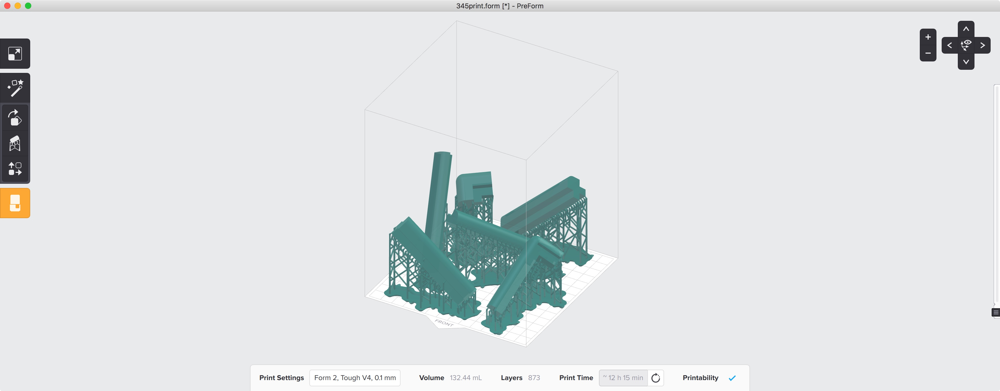The back pieces of the blender were the thinnest, so I was able to fit the largest number of them onto the Form 2 build platform. Since the front pieces are a little bulkier (to support the special well that the touchscreen sits in) I had to print the lower part of that and upper part as two separate prints.
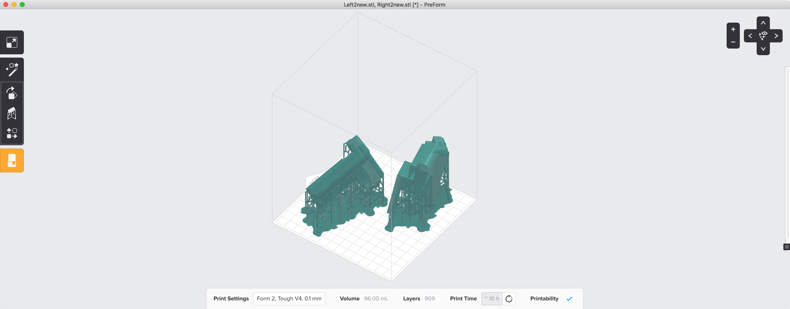The diagonal orientation of the pieces serves a two-fold purpose. Diagonal pieces make good use of the entire build volume inside the printer allowing me to fit larger pieces into the printer. Additionally, the same SLA printing works requires peeling the piece off of the surface of the bottom of the tank - lower cross-sectional area reduces the chance of failure and minimizes manufacturing time because I don't lose days because of failed prints.
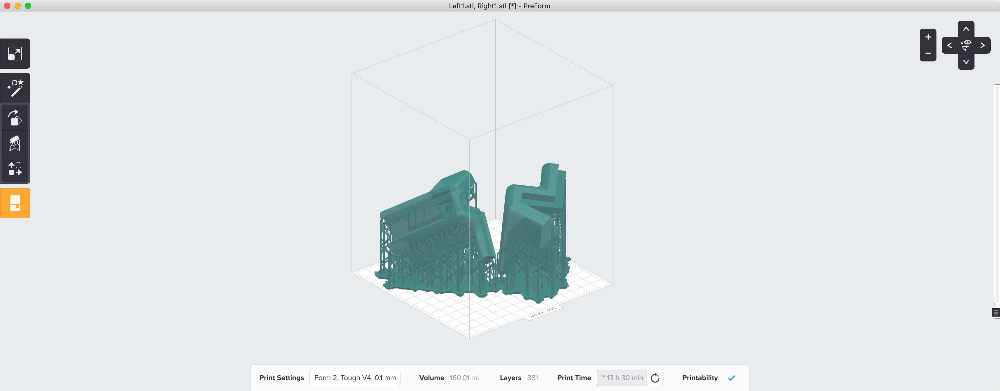I had to set up each bracket in Preform, the Formlabs Form 2 print software, before being able to sent it to the printer. In stereolithography (SLA) printers, it is best to print the model using supports so that it is elevated of the surface of the build platform and smooth edges come out nicer. The print time for each set up brackets was approximately 11 hours, so I started most of these prints in the evening and let them run overnight. The final pieces came out resin-soaked, but with beautiful edges.
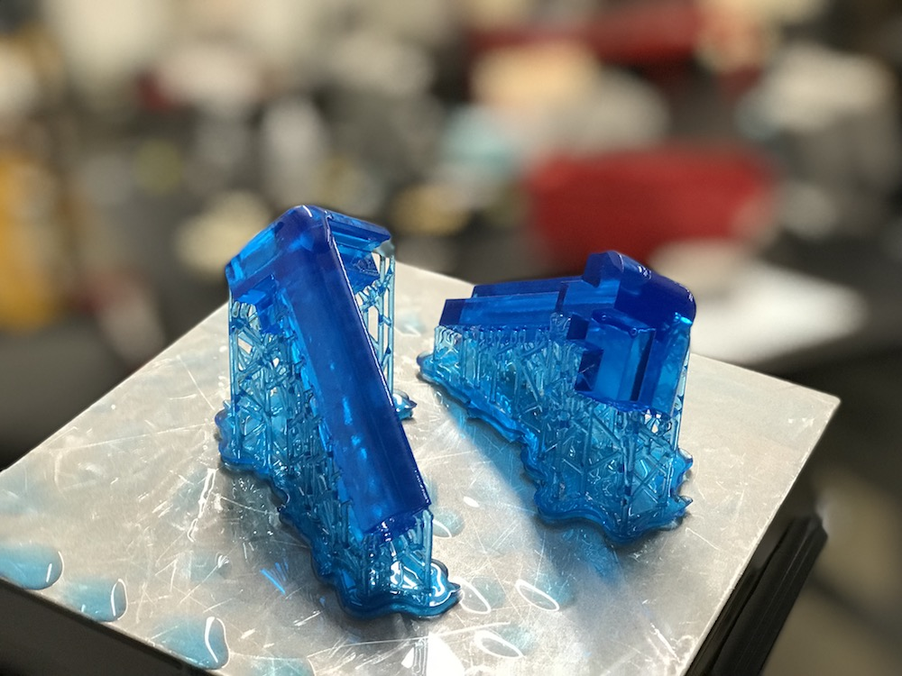SLA printing produces beautiful parts, but those parts have to undergo a wash and cure process before they are ready to use. I had to wash the resin-soaked parts in isopropyl alcohol (IPA) in 20 minutes to remove any leftover resin. After the IPA bath, I had to let the parts dry and then move them over to a UV cure station where they were cured under UV light for 120 minutes. This process was complex and time-consuming, but led to beautiful parts like show below.
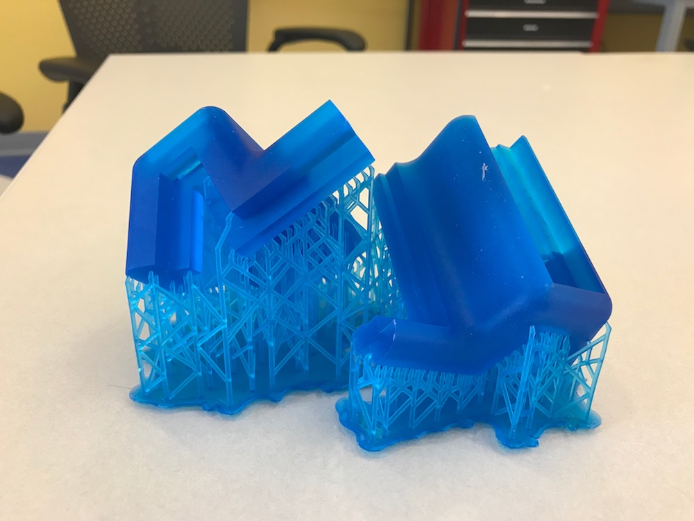With all of the parts 3D-printed, I could assemble a wire-frame for the blender. This was very beautiful, but didn't feel complete without the laser cut in-between parts. I moved on to designing the files for that shortly after finishing 3D-printing.
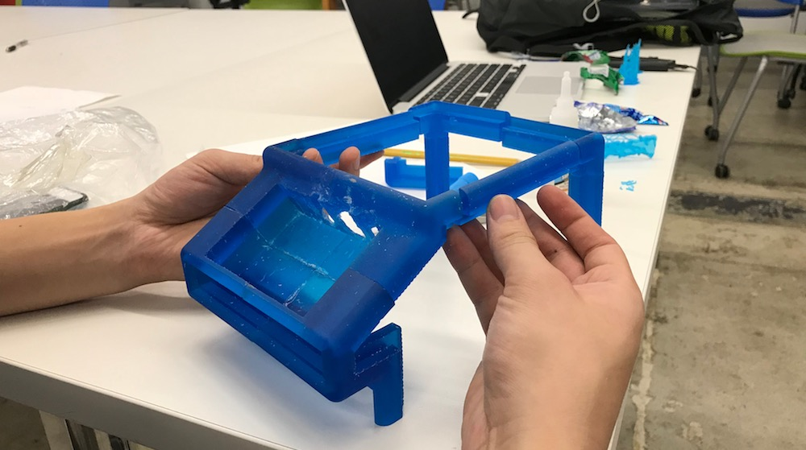Laser cutting was a relatively straightforward process - I quickly designed the pieces in Fusion 360 based off of the area remaining in the original blender model once I reduced it to just corner pieces.
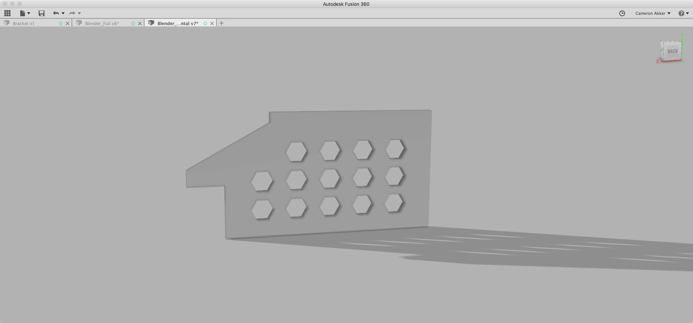Since I used 1/4" clear acrylic, I needed relatively powerful laser cut settings in order to cut clean through the material. I ended up using a speed of 8% and a power of 100 on the laser at 5000Hz. This created very clean cuts and meant a total cut time of about 13 minutes per sheet.
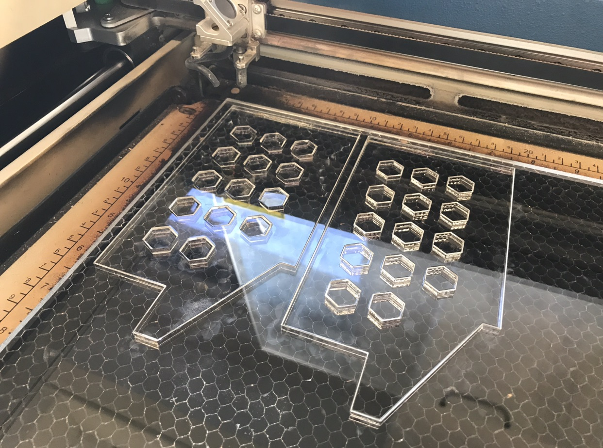Electrical Design & Programming
The electrical aspect of this project mainly involved driving a DC motor from an LCD touchscreen. There are several layers of abstraction here, but fundamentally, the Raspberry Pi has the ability to supply a PWM signal which will be used in a power MOSFET circuit to drive the DC motor. The motor I am using is originally used in electric scooters and therefore has plenty of torque for blending.
Block Diagram & Motor Driving
I started off the electrical design by putting together an electrical block diagram that shows all of the essential parts of the circuit. Additional sensors like temperature sensors or capsense level sense devices are simple GPIO devices that just require an ADC pin or a couple pins to communicate over SPI or I2C. These devices can be added later but will clutter the block diagram if added too early.
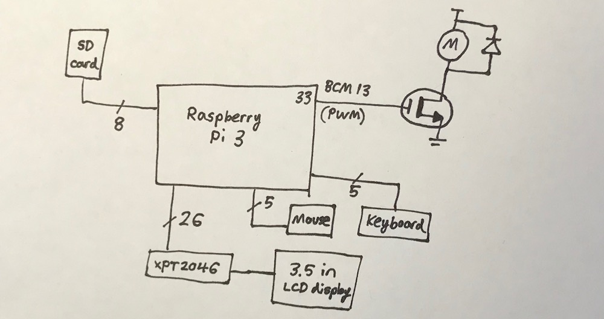The motor is a highly inductive load and has to have a diode to protect it for safety. I chose to use the XYD-6D motor which runs at 24V ideally and provides 2600rpm at top speed which corresponds to roughly 43rps which is plenty for blending soft things like fruits and vegetables. I am driving the motor via a power MOSFET and a PWM signal that comes straight from the Raspberry Pi. The rest of the circuit is mostly straightforward.
Touchscreen
I found an LCD touchscreen that only costs $17.99 on Amazon made by Elegoo. It runs off of the XPT2046 touch controller and has a curious amount of control circuitry on the back of the PCB.
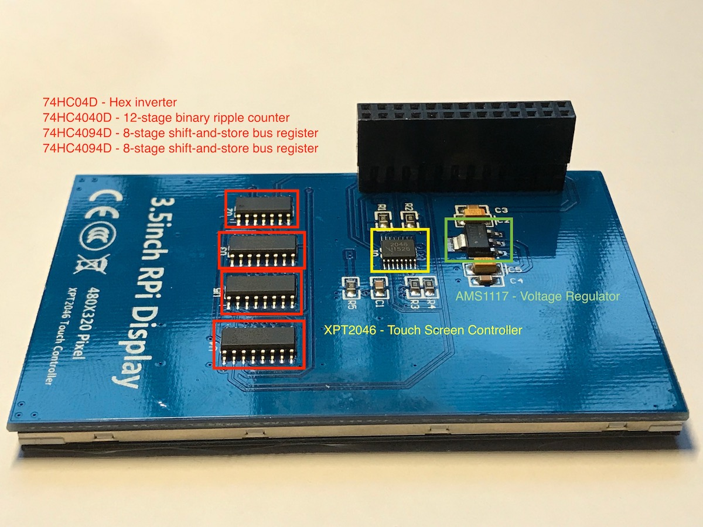Probing these pins on the small ICs isn't necessary unless something goes terribly wrong with the LCD screen touchscreen. If I had more time to explore this PCB, it would be very interesting to understand why a 12-bit ripple counter was necessary to the operation of this device.
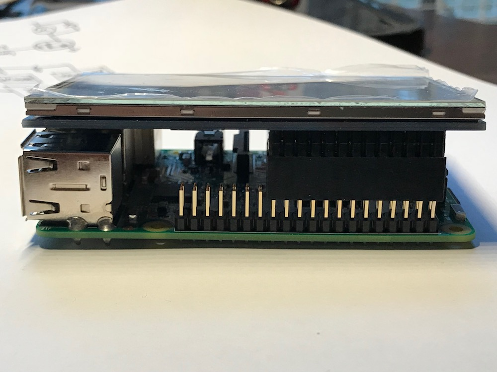After connecting the touchscreen to the Raspberry Pi, I promptly entered driver hell. The standard operating system for a Raspberry Pi is called Raspbian and is based off of the Debian Linux OS. The user guide for the Elegoo touchscreen recommended installing a custom flavor of Raspbian that actually had the touchscreen drivers pre-installed on it. I needed to format an SD card using the Windows virtual machine on my Mac, and then write the IMG file of this custom OS onto that card so it could be booted from the Raspberry Pi.
I used a helpful program called "Etcher" to write the Raspbian image to the SD card and it took about 25 minutes to complete. When I booted up the Raspberry Pi by plugging in a Micro-USB power source, the touch screen just showed a blank image
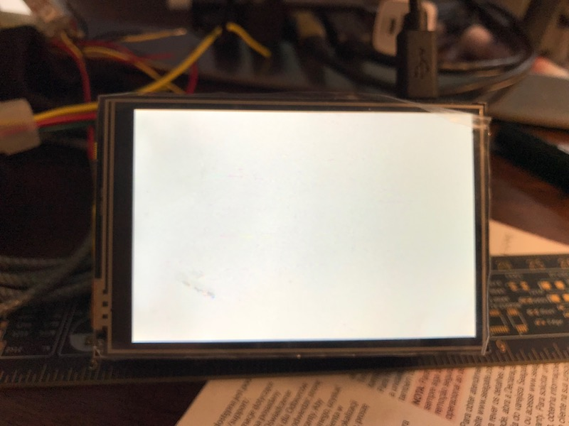I tried a separate SD card before finally determining the source of the error was the disk IMG being corrupted, not the writing to the SD card. I decided to go a separate route at this point and installed the drivers separately on a clean installation of Raspbian. This was a complex process because the Raspbian IMG file is just over 4GB in size - I had to locate a 8GB SD card since the 4GB ones I had been using would not be big enough. I burned the disk image to the SD card and had to connect the system to an external monitor for setup.
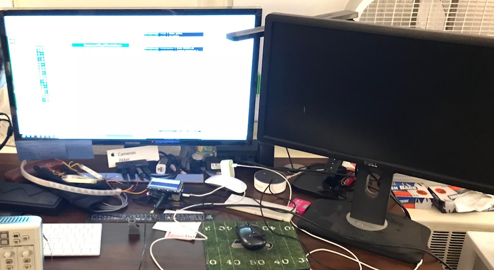
Connecting the Raspberry Pi to Harvard University wireless turned out to be a rabbit hole of its own - Harvard networks require users to register devices by their MAC address in order to allow them to connect to Harvard Wifi. Turns out the Raspberry Pi MAC address is accessible from the command line. I had to type the command ifconfig eth0 which then caused the following to display, in which the MAC address is embedded.
eth0 Link encap:Ethernet HWaddr c7:35:ce:fd:8e:a1
inet addr:192.168.0.16 Bcast:192.168.0.255 Mask:255.255.255.0
inet6 addr: fe80::ba27:ebff:fefc:9fd2/64 Scope:Link
UP BROADCAST RUNNING MULTICAST MTU:1500 Metric:1I took this MAC address to the Harvard new device registration portal at https://getonline.harvard.edu/guest/mac_create.php and began setting up the new device. Once it was created, it required 60 seconds to official become available to connect.
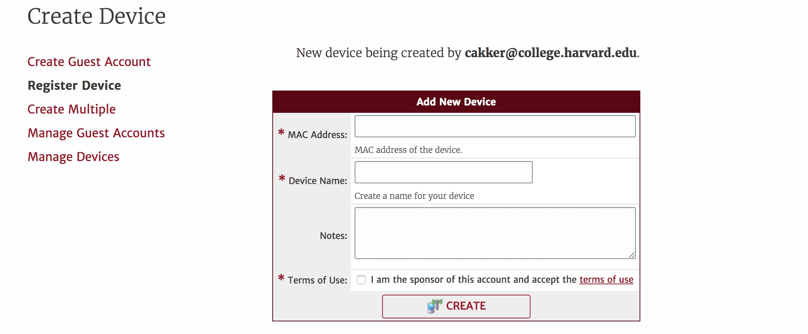Only after this was all said and done, I could get the Raspberry Pi online. From there, I needed to download the drivers for the touchscreen from a special Git repo hosted by the company that makes the touchscreen. After many terminal commands and frustration, I finally managed to load the touchscreen without having the external monitor there as well.
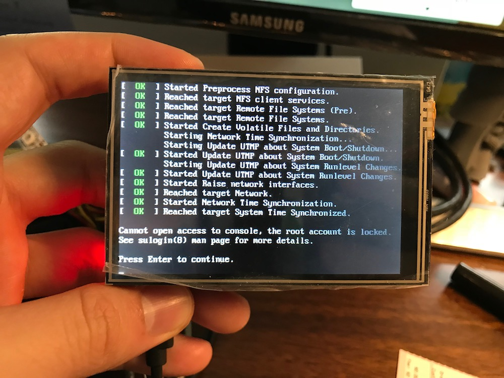Python Program
The final step of the puzzle was to allow the Raspberry Pi to output PWM that could control the motor. This was a non-trivial step as the Raspberry Pi is abstracted far enough away from the hardware programming of something like Arduino that correctly accessing the GPIO pins necessary to pulse width modulate the motor was a daunting task.
I decided to write this portion of the code in Python since I have some experience in it and it is a language for which there is a ton of Raspberry Pi support. I needed to initialize the pins as outputs and then cause the Raspberry Pi to pulse-width modulate on them to turn the motor.